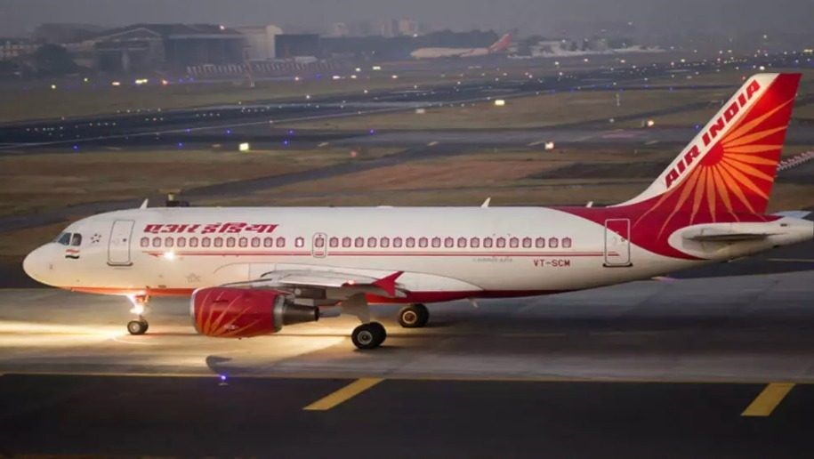
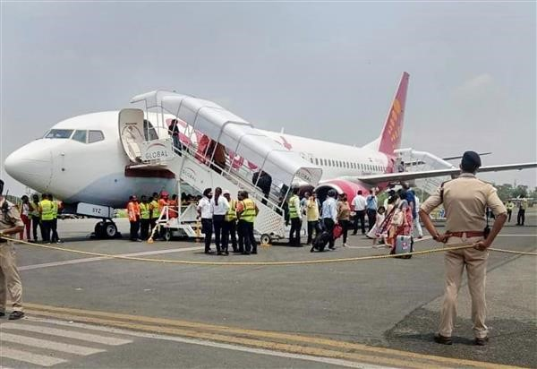

An airplane or aeroplane (informally plane) is a fixed-wing aircraft that is propelled forward by thrust from a jet engine, propeller, or rocket engine. Airplanes come in a variety of sizes, shapes, and wing configurations. The broad spectrum of uses for airplanes includes recreation, transportation of  goods and people, military, and research. Worldwide, commercial aviation transports more than four billion passengers annually on airliners and transports more than 200 billion tonne-kilometers of cargo annually, which is less than 1% of the world's cargo movement. Most airplanes are flown by a pilot on board the aircraft, but some are designed to be remotely or computer-controlled such as drones.
The Wright brothers invented and flew the first airplane in 1903, recognized as "the first sustained and controlled heavier-than-air powered flight". They built on the works of George Cayley dating from 1799, when he set forth the concept of the modern airplane (and later built and flew models and successful passenger-carrying gliders) and the work of German pioneer of human aviation Otto Lilienthal, who, between 1867 and 1896, also studied heavier-than-air flight. Lilienthal's flight attempts in 1891 are seen as the beginning of human flight. Following its limited use in World War I, aircraft technology continued to develop. Airplanes had a presence in all the major battles of World War II. The first jet aircraft was the German Heinkel He 178 in 1939. The first jet airliner, the de Havilland Comet, was introduced in 1952. The Boeing 707, the first widely successful commercial jet, was in commercial service for more than 50 years, from 1958 to at least 2013.
First attested in English in the late 19th century (prior to the first sustained powered flight), the word airplane, like aeroplane, derives from the French aéroplane, which comes from the Greek ἀήρ (aēr), " air" and either Latin planus, "level", "wandering". "Aéroplane" originally referred just to the wing, as it is a plane moving through the air. In an example of synecdoche, the word for the wing came to refer to the entire aircraft.
In the United States and Canada, the term "airplane" is used for powered fixed-wing aircraft. In the United Kingdom and most of the Commonwealth, the term "aeroplane" (is usually applied to these aircraft. The Frenchman Clement Ader constructed his first of three flying machines in 1886, the Éole. It was a bat- like design run by a lightweight steam engine of his own invention, with four cylinders developing  20 horsepower (15 kW), driving a four-blade propeller. The engine weighed no more than 4 kilograms per kilowatt (6.6 lb/hp). The wings had a span of 14 m (46 ft). All-up weight was 300 kilograms (660 lb). On 9 October 1890, Ader attempted to fly the Éole. Aviation historians give credit to this effort as a powered take-off and uncontrolled hop of approximately 50 m (160 ft) at a height of approximately 200 mm (7.9 in). Ader's two subsequent machines were not documented to have achieved flight
The American Wright brothers flights in 1903 are recognized by the Fédération Aéronautique Internationale (FAI), the standard-setting and record-keeping body for aeronautics, as "the first sustained and controlled heavier-than-air powered flight". By 1905, the Wright Flyer III was capable of fully controllable, stable flight for substantial periods. The Wright brothers credited Otto Lilienthal as a major inspiration for their decision to pursue manned flight. In 1906, the Brazilian Alberto Santos-Dumont made what was claimed to be the first airplane flight unassisted by catapult and set the first world record recognized by the Aéro-Club de France by flying 220 meters (720 ft) in less than 22 seconds. This flight was also certified by the FAI.
World War I served as a testbed for the use of the airplane as a weapon. Airplanes demonstrated their potential as mobile observation platforms, then proved themselves to be machines of war capable of causing casualties to the enemy. The earliest known aerial victory with a synchronized machine gun-armed fighter aircraft occurred in 1915, by German Luftstreitkräfte Leutnant Kurt Wintgens. Fighter aces appeared; the greatest (by number of Aerial Combat victories) was Manfred von Richthofen.
When risk is measured by deaths per passenger kilometer, air travel is approximately 10 times safer than travel by bus or rail. However, when using the deaths per journey statistic, air travel is significantly more dangerous than car, rail, or bus travel. Air travel insurance is relatively expensive for this reason— insurers generally use the deaths per journey statistic. There is a significant difference between the safety of airliners and that of smaller private planes, with the per-mile statistic indicating that airliners are 8.3 times safer than smaller planes. Like all activities involving combustion, fossil-fuel-powered aircraft release soot and other pollutants into the atmosphere. Greenhouse gases such as carbon dioxide (CO2) are also produced. In addition, there are environmental impacts specific to airplanes: for instance,